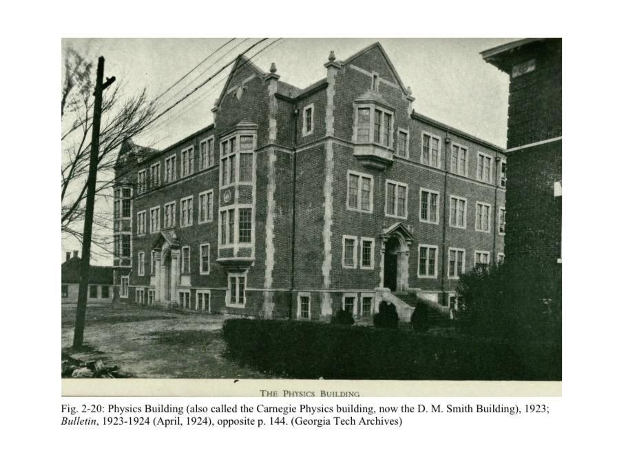

Building History
A 1923 Carnegie-funded classroom building, recently restored as the home of the School of Public Policy.
1923 Physics Building photograph, now the D.M. Smith Building; image courtesy of Georgia Tech Archives.

The D.M. Smith Building, completed in 1923, was designed by Robert and Company Architects, and Francis Palmer Smith who was head of the Georgia Tech Department of Architecture at the time. As architecture department faculty were able to receive commissions for campus buildings, it was considered beneficial for the Department of Architecture to design and oversee the construction of new campus buildings, keeping professors and students involved in realistic projects. It was originally designed to be a physics laboratory after much debate about what the building could be used for. It was originally named Carnegie Physics Building and was renamed in the 1960s for the mathematics professor, Dr. David Melville Smith.
This demonstrates an original photo of D.M Smith at its original construction. We will use this to compare the newer version that they just completed renovations on.
This image shows the restored and newly renovated D.M. Smith Building. We will use this photo to compare with the old photo to show how the photos, building, and surrounding area has changed/been improved over time.
The renovation created:
New Academic Spaces: Policy Innovation Lab, 1 lecture hall, 6 classrooms, 5 meeting rooms, 5 student support spaces, 44 offices,
More Accessibility: Added an elevator, permanent wheelchair access, and completely updated mechanical, electrical, and plumbing systems.
More Sustainability: Transitioned the building to be fully electric, aligning with campus carbon-reduction goals
Historic Preservation: Preserved and restored original terrazzo floors, select woodwork, slate chalkboards, salvaged wood flooring, and uncovered historic 1920s student signatures and lecture hall skylight
Front entrance of the D.M. Smith Building at the time of construction, 1923. Georgia Tech Calendars Visual Material Collection, VAC402. Archives and Special Collections, Library, Georgia Institute of Technology.
“A lecture in the Physics Building.” 1928 Blueprint, Georgia Tech
By maintaining much of the original structure and architecture, Georgia Tech maintains its historical identity, architectural heritage, and connection to generations of students who came before. The renovated D.M. Smith Building represents Georgia Tech's ability to honor its past while preparing for the future. It provides modern academic spaces, improved accessibility, and sustainable infrastructure while preserving important pieces of campus history.
It was considered beneficial for the Department of Architecture to design and oversee the construction of new campus buildings with the idea that this would keep professors and students involved in realistic projects. (page 3)
At Georgia Tech two earlier proposals were turned down by the Corporation before the third, a physics laboratory, was accepted as a fitting use for the proposed donation. (page 10)
ROBERT AND COMPANY L.W. “CHIP” ROBERT, JR.
FRANCIS PALMER SMITH HEAD OF THE DEPARTMENT OF ARCHITECTURE FROM 1909 - 1922
It was named “Physics Building” → The physics building was renamed in the 1960s for the legendary mathematics professor, Dr. David Melville Smith.
Download the complete original D.M. Smith document, including its embedded images